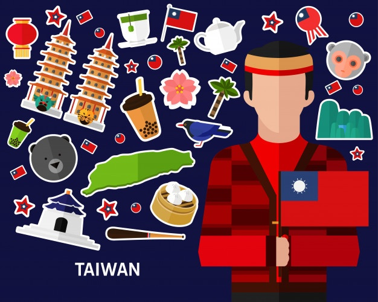

Тайва́нь, або
Тайва́н (кит. 臺灣 або 台灣, Táiwān; тайванська Tâi-oân) — острів у Східній Азії. Керується урядом Республіки Китай, яка також володіє Охрідськими островами, Зеленими островами у Тихому океані, а також Пескадорськими, Кінменськими і островами Мацу. Окрім Республіки Китай, на володіння островом претендує комуністичний уряд Китайської Народної Республіки. Найбільше місто — Сіньбей[2]. Розташований у південній частині Східної Азії, на південний схід від континентального Китаю. На сході і північному сході Тайвань межує з водами Японії і островами Рюкю. На південь від нього розташовані Філіппіни. Тайвань омивається Тихим океаном на сході, Південно-Китайським морем і Лусонською протокою на півдні, Тайванською протокою на заході і Східно-Китайським морем на сході. Площа острова становить 35.801 км², довжина — 394 км, ширина — 144 км[3]. На Тайвані переважають скелясті уступчасті гори вкриті тропічними і субтропічними лісами. Традиційна європейська назва — Формо́за (порт. Formosa, МФА:(«Красивий»).
Острів витягнутий з півночі на південь на 394 км, ширина близько 140 км, площа 35 834 км2.
Східні береги часто обривисті, західні пологі. Протяжність берегової лінії — 1566 км.
Уздовж всього острова тягнуться вкриті лісами Тайванські гори (найвища точка — гора Юйшань, 3952 м); на півночі — група вимерлих вулканів, на заході — прибережна рівнина (тут проживає 90 % населення острова).
| Місцезнаходження |
Південна Азія |
| Акваторія |
Східнокитайське море, Південно-Китайське море, Філіппінське море |
| Площа |
35882,6258 км² (38-ме місце) |
| Довжина |
394 км |
| Ширина |
144 км |
| Берегова лінія |
1239,5756 км |
Острів витягнутий з півночі на південь на 394 км, ширина близько 140 км, площа 35 834 км2.
Східні береги часто обривисті, західні пологі. Протяжність берегової лінії — 1566 км.
Уздовж всього острова тягнуться вкриті лісами Тайванські гори (найвища точка — гора Юйшань, 3952 м); на півночі — група вимерлих вулканів, на заході — прибережна рівнина (тут проживає 90 % населення острова).
Клімат.

Клімат на півночі субтропічний, на півдні — тропічний мусонний. Сума опадів на рівнинній частині — 1500—2500 мм, в горах понад 5000 мм. В серпні і вересні часті тайфуни.
На Тайвані з червня по серпень триває сезон дощів. Для північної частини острова характерна висока хмарність протягом усього року. На півдні 90 % річних опадів випадає в сезон дощів.